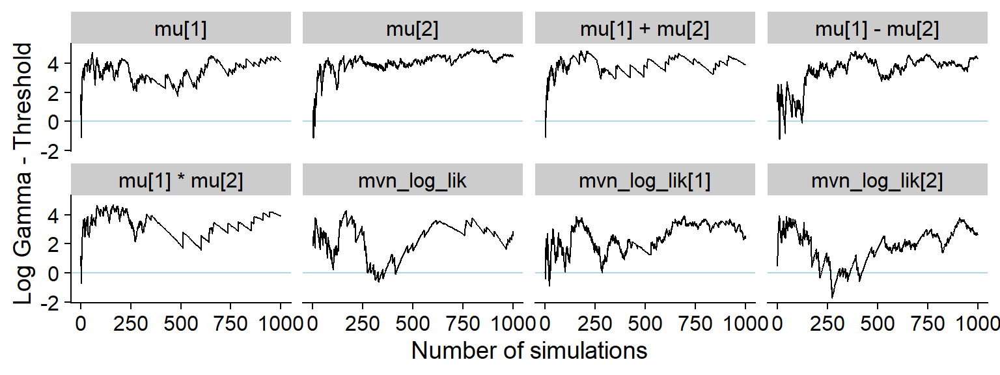
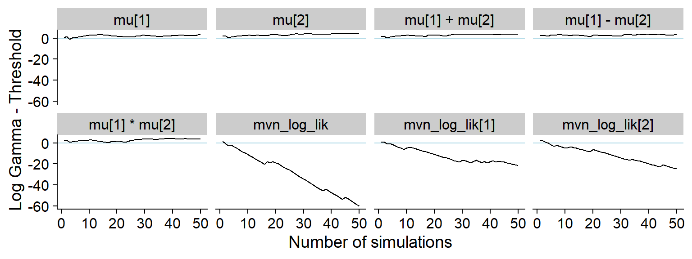
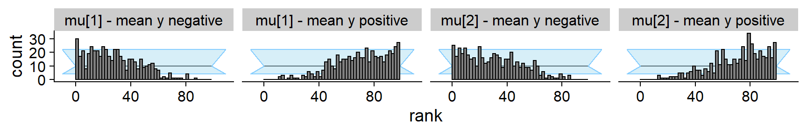
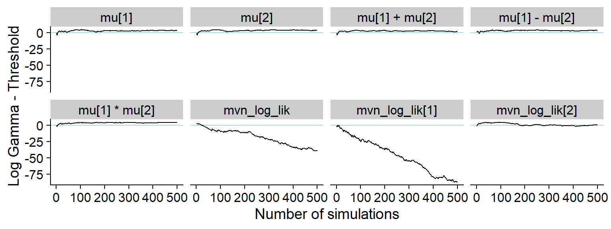
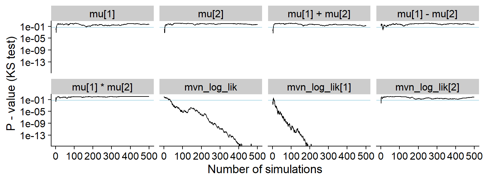
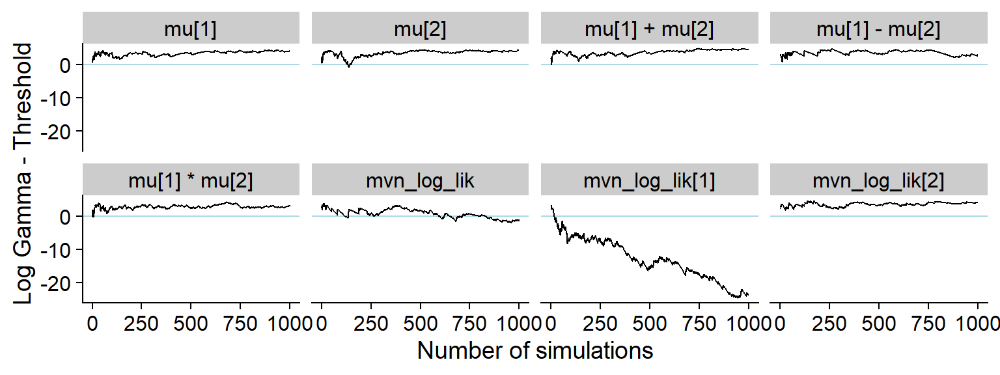
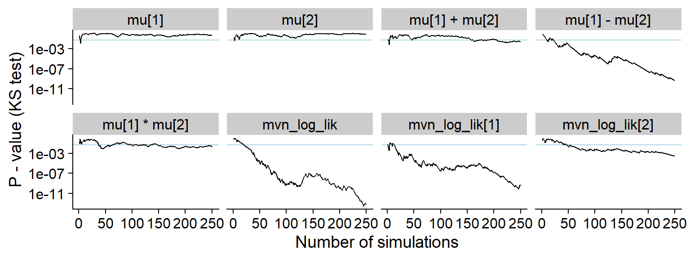
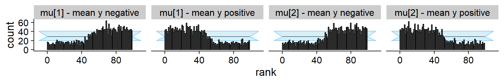
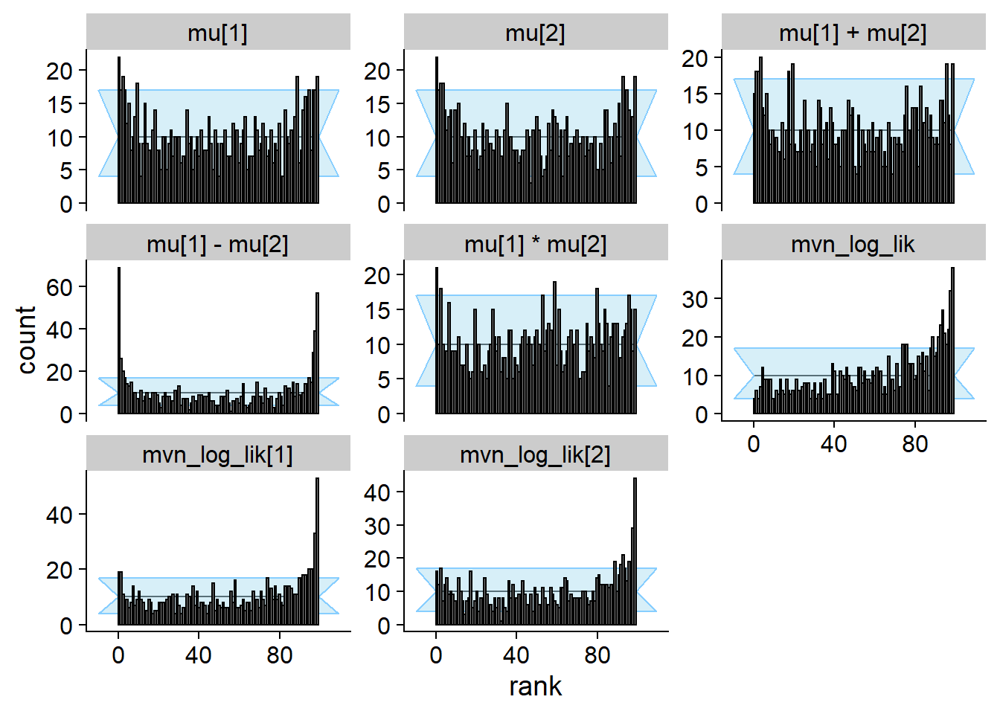

Multivariate normal example
Abstract
This R Markdown document runs the simulations and recreates all the figures used in Section 4 of the paper ‘Simulation-Based Calibration Checking for Bayesian Computation: The Choice of Test Quantities Shapes Sensitivity’Setting up
The examples are run using the SBC R package. - consult the Getting Started with SBC vignette for basics of the package. We will also use “custom backends” which are discussed and explaiend in the Implementing a new backend.
knitr::opts_chunk$set(cache = TRUE)
library(SBC)
library(ggplot2)
library(mvtnorm)
library(patchwork)
library(tidyverse)
theme_set(cowplot::theme_cowplot())
options(mc.cores = parallel::detectCores())
library(future)
plan(multisession)
# If true, additional test quantities based on energy score and variogram
# score are included. Those were not very successful and are not discussed
# in the paper.
include_sampling_scores <- FALSE
# Setup caching of SBC results for faster iterations
if(include_sampling_scores) {
cache_dir <- "./_samp_scores_SBC_cache"
} else {
cache_dir <- "./_SBC_cache"
}
fig_dir <- "./_figs"
if(!dir.exists(cache_dir)) {
dir.create(cache_dir)
}
if(!dir.exists(fig_dir)) {
dir.create(fig_dir)
}
devtools::load_all()
hist_plot_width <- 8
hist_plot_height <- 4We are using the model:
\[ \begin{align} \mathbf{\mu} &\sim \mbox{MVN}(0, \mathbf{\Sigma}) \notag \\ \mathbf{y}_1, \ldots, \mathbf{y}_n &\sim \mbox{MVN}(\mathbf{\mu}, \mathbf{\Sigma}) \notag\\ \mathbf{\Sigma} &= \left(\begin{matrix} 1 & 0.8 \\ 0.8 & 1 \\ \end{matrix}\right) \end{align} \]
where \(MVN\) is the multivariate normal distribution. In this case the posterior has analytical solution and should also be multivariate normal.
Now we draw 1000 simulated datasets from this model:
set.seed(266552)
mvn_sigma <- matrix(c(1, 0.8,0.8,1), nrow = 2)
generator_func_correlated <- function(N, sigma = mvn_sigma) {
mu <- rmvnorm(1, sigma = sigma)
y <- rmvnorm(N, mean = mu, sigma = sigma)
list(variables = list(mu = mu[1,]),
generated = list(y = y))
}
N_sims <- 1000
ds <- generate_datasets(SBC_generator_function(generator_func_correlated, N = 3, sigma = mvn_sigma), N_sims)We will use a custom backend that will directly generate draws using
a function passed into the sampling_func argument.
my_backend_mvn <- function(sampling_func, N_samples = 100, func_extra_args = list()) {
structure(list(sampling_func = sampling_func, N_samples = N_samples,
func_extra_args = func_extra_args), class = "my_backend_mvn")
}
SBC_fit.my_backend_mvn <- function(backend, generated, cores) {
all_args <- c(list(y = generated$y, N_samples = backend$N_samples), backend$func_extra_args)
res_raw <- do.call(backend$sampling_func, all_args)
K <- ncol(generated$y)
colnames(res_raw) <- paste0("mu[", 1:K, "]")
posterior::as_draws_matrix(res_raw)
}
SBC_backend_iid_draws.my_backend_mvn <- function(backend) {
TRUE
}
my_backend_mvn_globals = c("SBC_fit.my_backend_mvn",
"SBC_backend_iid_draws.my_backend_mvn",
"mvn_sigma")By defualt, SBC will include the individual parameters
(mu[1], mu[2]) as test quantities. We now
setup the additional test quantities:
quants <- generated_quantities(`mu[1] + mu[2]` = mu[1] + mu[2],
`mu[1] - mu[2]` = mu[1] - mu[2],
`mu[1] * mu[2]` = mu[1] * mu[2],
mvn_log_lik = sum(mvtnorm::dmvnorm(y, mean = mu, sigma = mvn_sigma, log = TRUE)),
`mvn_log_lik[1]` = mvtnorm::dmvnorm(y[1,], mean = mu, sigma = mvn_sigma, log = TRUE),
`mvn_log_lik[2]` = mvtnorm::dmvnorm(y[2,], mean = mu, sigma = mvn_sigma, log = TRUE),
)
# Ordering the quantities for neat plotting in the paper
order_quants <- function(results) {
quants_in_order <- c("mu[1]", "mu[2]",
"mu[1] + mu[2]",
"mu[1] - mu[2]",
"mu[1] * mu[2]",
"mvn_log_lik",
"mvn_log_lik[1]",
"mvn_log_lik[2]",
"abs(mu[1])",
"drop(mu[1])",
"sin(1/mu[1])",
"mu[1] * mean(y[,1])",
"energy_score",
"variogram_score")
if(!(all(results$stats$variable %in% quants_in_order))) {
print(setdiff(unique(results$stats$variable, quants_in_order)))
stop("Unrecognized quants")
}
results$stats <- results$stats %>% mutate(variable = factor(variable, levels = quants_in_order))
results
}if(include_sampling_scores) {
sampled_score_mvnorm <- function(y, mu, sigma, score, ...) {
sim_data <- t(mvtnorm::rmvnorm(200, mean = mu, sigma = sigma))
res_single <- numeric(nrow(y))
for(i in 1:nrow(y)) {
res_single <- score(y[i,], sim_data, ...)
}
mean(res_single)
}
es_mvnorm <- function(y, mu, sigma) {
sampled_score_mvnorm(y, mu, sigma, scoringRules::es_sample)
}
vs_mvnorm <- function(y, mu, sigma) {
sampled_score_mvnorm(y, mu, sigma, scoringRules::vs_sample)
}
quants_sampled <- generated_quantities(`energy score` = es_mvnorm(y, mu, mvn_sigma),
`variogram score` = vs_mvnorm(y, mu, mvn_sigma),
.globals = c("sampled_score_mvnorm", "es_mvnorm", "vs_mvnorm"))
quants <- bind_generated_quantities(quants, quants_sampled)
}Correct posterior
Introducing \(\bar{\mathbf{y}} = \frac{1}{N}\sum_{i = 1}^{N} \mathbf{y}_i\), the posterior is \(MVN\left(\frac{N\bar{\mathbf{y}}}{n + 1}, \frac{1}{N + 1}\mathbf{\Sigma}\right)\)
Let’s define the sampling function and backend corresponding to the correct posterior and run SBC.
sampling_func_correct <- function(y, N_samples, prior_sigma = mvn_sigma) {
K <- ncol(y)
N <- nrow(y)
ybar = colMeans(y)
post_mean <- N * ybar / (N + 1)
post_sigma <- prior_sigma / (N + 1)
res_raw <- mvtnorm::rmvnorm(N_samples, mean = post_mean, sigma = post_sigma)
}
backend_correct <- my_backend_mvn(sampling_func_correct)
res_correct <- compute_SBC(ds, backend_correct, gen_quants = quants,
globals = my_backend_mvn_globals,
cache_mode = "results",
cache_location = file.path(cache_dir, "mvn_correct"),
)
res_correct <- order_quants(res_correct)Those are the diagnostic plots after 1000 simulations.
plot_rank_hist(res_correct)plot_ecdf_diff(res_correct)And here is the history of the gamma statistic (see the paper for exact definitons).
p_hist_correct <- plot_log_gamma_history(res_correct)## Precomputing gamma thresholdsp_hist_correct
ggsave(file.path(fig_dir, "hist_correct.pdf"), p_hist_correct, width = hist_plot_width, height = hist_plot_height)For comparison also the history of the p-value for a Kolmogorov-Smirnov test for uniformity (blue horizontal line is 0.05).
plot_ks_test_history(res_correct)Ignoring Data
Several examples of posteriors that ignore all or some of the data follow.
Prior only
Now we run SBC for a backend that samples from the prior:
sampling_func_prior_only <- function(y, N_samples) {
mvtnorm::rmvnorm(n = N_samples, sigma = mvn_sigma)
}
backend_prior_only <- my_backend_mvn(sampling_func_prior_only)
res_prior_only <- compute_SBC(ds, backend_prior_only, gen_quants = quants,
globals = my_backend_mvn_globals,
cache_mode = "results",
cache_location = file.path(cache_dir, "mvn_prior_only"))
res_prior_only <- order_quants(res_prior_only)Now the diagnostic plots
plot_rank_hist(res_prior_only)plot_ecdf_diff(res_prior_only)p_hist_prior_only <- plot_log_gamma_history(res_prior_only, max_sim_id = 50)
p_hist_prior_only
ggsave(file.path(fig_dir, "hist_prior_only.pdf"), p_hist_prior_only, width = hist_plot_width, height = hist_plot_height)Here’s the rest of the history showing that non-data dependent variables do not show any meaningful discrepancy:
plot_log_gamma_history(res_prior_only, max_sim_id = 1000, variables_regex = "^mu|vario")For comparison, here’s the history of the KS p-value:
plot_ks_test_history(res_prior_only, max_sim_id = 50)## Warning: Transformation introduced infinite values in continuous y-axisAdditonally, we show that splitting the ranks for mu[1]
and mu[2] by the average of y results in
strongly non-uniform histograms. However the non-uniformity in each
subgroup is much smaller than what e.g. the mvn_log_lik
quantity provides.
mean1_positive <- which(purrr::map_lgl(ds$generated, function(x) { mean(x$y[,1]) > 0 }))
mean2_positive <- which(purrr::map_lgl(ds$generated, function(x) { mean(x$y[,2]) > 0 }))
stats_split <- res_prior_only$stats %>% filter(variable %in% c("mu[1]", "mu[2]")) %>%
mutate(variable = paste0(variable, " - mean y ",
if_else(if_else(variable == "mu[1]", sim_id %in% mean1_positive, sim_id %in% mean2_positive),
"positive", "negative"))
)
# The visualisations in SBC package do not supprt different variables have different
# number of simulations. We thus discard simulations to keep both groups of the same size.
min_n <- stats_split %>% group_by(variable) %>% summarise(n = n()) %>% pull(n) %>% min()
stats_split <- stats_split %>% group_by(variable) %>%
mutate(sim_id = 1:n()) %>%
ungroup() %>%
filter(sim_id <= min_n)
p_rank_hist_prior_only_split <- plot_rank_hist(stats_split) + facet_wrap(~variable, nrow = 1)
p_rank_hist_prior_only_split
ggsave(file.path(fig_dir, "rank_hist_prior_only_split.pdf"), p_rank_hist_prior_only_split, width = hist_plot_width + 1, height = hist_plot_height / 2 )One missing data point
Now we have one data point missing:
sampling_func_one_missing <- function(y, N_samples) {
# Delegate to the correct posterior, just throw away data
sampling_func_correct(y[2:nrow(y),], N_samples)
}
backend_one_missing <- my_backend_mvn(sampling_func_one_missing)
set.seed(5652265)
res_one_missing <- compute_SBC(ds, backend_one_missing, gen_quants = quants,
globals = c(my_backend_mvn_globals, "sampling_func_correct"),
cache_mode = "results",
cache_location = file.path(cache_dir, "mvn_one_missing"))
res_one_missing <- order_quants(res_one_missing)The diagnostic plots:
plot_rank_hist(res_one_missing)plot_ecdf_diff(res_one_missing)And the history of the gamma statistic
p_hist_one_missing <- plot_log_gamma_history(res_one_missing, max_sim_id = 100)
p_hist_one_missingggsave(file.path(fig_dir, "hist_one_missing.pdf"), p_hist_one_missing, width = hist_plot_width, height = hist_plot_height)A bit longer window
plot_log_gamma_history(res_one_missing, max_sim_id = 500)
And the KS p-value - note that the initial discrepancies in all of the quantities look more serious in this view (although the non-likelihood quantities in fact have uniform distribution)
plot_ks_test_history(res_one_missing, max_sim_id = 500)## Warning: Transformation introduced infinite values in continuous y-axis
One missing data point - larger N
Identical setup as above, but we have 20 data points.
# Generate datasets with 20 datapoints.
set.seed(2665884)
ds_20 <- generate_datasets(SBC_generator_function(generator_func_correlated, N = 20, sigma = mvn_sigma), N_sims)
res_one_missing_20 <- compute_SBC(ds_20, backend_one_missing, gen_quants = quants,
globals = c(my_backend_mvn_globals, "sampling_func_correct"),
cache_mode = "results",
cache_location = file.path(cache_dir, "mvn_one_missing_20"))
res_one_missing_20 <- order_quants(res_one_missing_20)The final diagnostic plots
plot_rank_hist(res_one_missing_20)plot_ecdf_diff(res_one_missing_20)History of gamma statistic
p_hist_one_missing_20 <- plot_log_gamma_history(res_one_missing_20)
p_hist_one_missing_20
ggsave(file.path(fig_dir, "hist_one_missing_20.pdf"), p_hist_one_missing_20, width = hist_plot_width, height = hist_plot_height)History of KS p-value
plot_ks_test_history(res_one_missing_20)Incorrect posterior correlations
Especially when the number of data points is small, the correlations in the prior should persist in the posterior.
We however generate posterior samples from a set of independent normal distributions that happen to have the correct mean and standard deviation, just the correlation is missing.
sampling_func_uncorr <- function(y, N_samples, prior_sigma = 1) {
K <- ncol(y)
N <- nrow(y)
ybar = colMeans(y)
res_raw <- matrix(nrow = N_samples, ncol = K)
for(k in 1:K) {
post_mean <- N * ybar[k] / (N + 1)
post_sd <- sqrt(1 / (N + 1)) * prior_sigma
res_raw[,k] <- rnorm(N_samples, mean = post_mean, sd = post_sd)
}
res_raw
}
backend_uncorr <- my_backend_mvn(sampling_func_uncorr)
res_uncorr <- compute_SBC(ds, backend_uncorr,
globals = my_backend_mvn_globals,
gen_quants = quants,
cache_mode = "results",
cache_location = file.path(cache_dir, "mvn_uncorr"))
res_uncorr <- order_quants(res_uncorr)Although the posterior is incorrect, the default univariate checks don’t show any problem even with 1000 simulations. All of the other quantities however show issues.
plot_rank_hist(res_uncorr)plot_ecdf_diff(res_uncorr)The history of the gamma statistic.
p_hist_corr <- plot_log_gamma_history(res_uncorr, max_sim_id = 100)
p_hist_corrggsave(file.path(fig_dir, "hist_corr.pdf"), p_hist_corr, width = hist_plot_width, height = hist_plot_height)A somewhat longer window shows how all the quantities produce issues:
plot_log_gamma_history(res_uncorr, max_sim_id = 250)
And KS p-value. Note the lowered sensitivity towards issues with
mu[1] * mu[2] and mu[1] + mu[2].
plot_ks_test_history(res_uncorr, max_sim_id = 250)
Non-monotonous transform
Finally our backend showing the (probably not very practical) utility of non-monotonous transformations.
set.seed(246855)
# Generate even more datasets - same quantities take loooong to show problems
ds_more <- bind_datasets(
ds,
generate_datasets(SBC_generator_function(generator_func_correlated, N = 3, sigma = mvn_sigma), n_sims = 5000)
)Now let us build the sampling function. The overall idea is that we start with the correct posterior. We then use the CDF to transform the samples to [0,1], manipulate the value on this scale to achieve the desired CDF shape and than transform back with the quantile function.
sampling_func_non_mon <- function(y, N_samples, prior_sigma = mvn_sigma) {
# Sample as if correct
K <- ncol(y)
N <- nrow(y)
ybar = colMeans(y)
post_mean <- N * ybar / (N + 1)
post_sigma <- prior_sigma / (N + 1)
res <- mvtnorm::rmvnorm(N_samples, mean = post_mean, sigma = post_sigma)
# Modify
for(k in 1:K) {
res_k <- res[,k]
uniform_q <- pnorm(res_k, post_mean[k], sqrt(post_sigma[k,k]))
if(mean(y[,k]) > 0) {
transformed_q <- dplyr::if_else(uniform_q < 0.5, 1.5 * uniform_q, 0.75 + (uniform_q - 0.5)*0.5)
} else {
transformed_q <- dplyr::if_else(uniform_q < 0.5, 0.5 * uniform_q, 0.25 + (uniform_q - 0.5)*1.5)
}
res_k <- qnorm(transformed_q, post_mean[k], sqrt(post_sigma[k,k]))
res[,k] <- res_k
}
res
}
backend_non_mon <- my_backend_mvn(sampling_func_non_mon)
# Define different test quantities
quants_non_mon <- generated_quantities(`mu[1] * mu[2]` = mu[1] * mu[2],
`abs(mu[1])` = abs(mu[1]),
`drop(mu[1])` = ifelse(mu[1] < 1, mu[1], mu[1] - 5),
`sin(1/mu[1])` = sin(1/mu[1]),
`mu[1] * mean(y[,1])` = mu[1] * mean(y[,1]),
mvn_log_lik = sum(mvtnorm::dmvnorm(y, mean = mu, sigma = mvn_sigma, log = TRUE)))
if(include_sampling_scores) {
quants_non_mon <- bind_generated_quantities(quants_non_mon, quants_sampled)
}
res_non_mon <- compute_SBC(ds_more, backend_non_mon, gen_quants = quants_non_mon,
globals = c(my_backend_mvn_globals, "sampling_func_correct"),
cache_mode = "results",
cache_location = file.path(cache_dir, "mvn_non_mon"))
res_non_mon <- order_quants(res_non_mon)The diagnostic plots
plot_rank_hist(res_non_mon)plot_ecdf_diff(res_non_mon)Show that the manipulation of the ranks was succesful - those are the
ranks split by positive/negative mean of y.
mean1_positive <- which(purrr::map_lgl(ds_more$generated, function(x) { mean(x$y[,1]) > 0 }))
mean2_positive <- which(purrr::map_lgl(ds_more$generated, function(x) { mean(x$y[,2]) > 0 }))
stats_split <- res_non_mon$stats %>% filter(variable %in% c("mu[1]", "mu[2]")) %>%
mutate(variable = paste0(variable, " - mean y ",
if_else(if_else(variable == "mu[1]", sim_id %in% mean1_positive, sim_id %in% mean2_positive),
"positive", "negative"))
)
# The visualisations in SBC package do not supprt different variables have different
# number of simulations. We thus discard simulations to keep both groups of the same size.
min_n <- stats_split %>% group_by(variable) %>% summarise(n = n()) %>% pull(n) %>% min()
stats_split <- stats_split %>% group_by(variable) %>%
mutate(sim_id = 1:n()) %>%
ungroup() %>%
filter(sim_id <= min_n)
p_rank_hist_non_mon_split <- plot_rank_hist(stats_split) + facet_wrap(~variable, nrow = 1)
p_rank_hist_non_mon_split
ggsave(file.path(fig_dir, "rank_hist_non_mon_split.pdf"), p_rank_hist_non_mon_split, width = hist_plot_width + 1, height = hist_plot_height / 2 )Now the history. To make everything well visible, show only a subset of the simulations for some quantities:
shared_mark <- geom_vline(color = "red", linetype = "dashed", xintercept = 500)
p_hist_non_mon_1 <- plot_log_gamma_history(res_non_mon, ylim = c(-30, 5), variables_regex = "(^mu\\[.\\]$)|lik|sin") +
theme(axis.title = element_blank()) + shared_mark## Precomputing gamma thresholdsp_hist_non_mon_2 <- plot_log_gamma_history(res_non_mon, ylim = c(-30, 5), max_sim_id = 500, variables_regex = "abs|\\*|drop") +
theme(axis.title = element_blank()) + shared_mark
#axis title: https://stackoverflow.com/questions/65291723/merging-two-y-axes-titles-in-patchwork
p_label <- ggplot(data.frame(l = "Log Gamma - Threshold", x = 1, y = 1)) +
geom_text(aes(x, y, label = l), angle = 90, size = 5) +
theme_void() +
coord_cartesian(clip = "off")
p_hist_non_mon <- p_label + (p_hist_non_mon_1 / p_hist_non_mon_2) + plot_layout(widths = c(0.4, 25))
p_hist_non_mon## Warning: Removed 676 row(s) containing missing values (geom_path).## Warning: Removed 252 row(s) containing missing values (geom_path).
ggsave(file.path(fig_dir, "hist_non_mon.pdf"), p_hist_non_mon, width = hist_plot_width, height = hist_plot_height)## Warning: Removed 676 row(s) containing missing values (geom_path).
## Removed 252 row(s) containing missing values (geom_path).This is the history without any modifications. Note that for several quantities the values crash too low and become NaN.
p_hist_non_mon_ext <- plot_log_gamma_history(res_non_mon, ylim = c(-30, 5))
p_hist_non_mon_ext## Warning: Removed 5752 row(s) containing missing values (geom_path).ggsave(file.path(fig_dir, "hist_non_mon_ext.pdf"), p_hist_non_mon_ext, width = hist_plot_width, height = hist_plot_height)## Warning: Removed 5752 row(s) containing missing values (geom_path).Small changes compound
Here we add small bias to the correct posterior.
K_changes <- 2
set.seed(5665525)
mvn_sigma_changes <- matrix(0.8, nrow = K_changes, ncol = K_changes)
diag(mvn_sigma_changes) <- 1
ds_changes <- generate_datasets(SBC_generator_function(generator_func_correlated, N = 3, sigma = mvn_sigma_changes), n_sims = 1000)
sampling_func_small_change <- function(y, N_samples, prior_sigma) {
res_correct <- sampling_func_correct(y, N_samples, prior_sigma)
K = nrow(prior_sigma)
bias <- rnorm(K, mean = 0, sd = 0.3)
res <- res_correct
for(k in 1:K) {
res[,k] <- res[,k] + bias[k]
}
res
}
backend_small_change <- my_backend_mvn(sampling_func_small_change, func_extra_args = list(prior_sigma = mvn_sigma_changes))
quants_change <- generated_quantities(sum = sum(mu),
sum_abs = sum(abs(mu)),
mvn_log_lik = sum(mvtnorm::dmvnorm(y, mean = mu, sigma = mvn_sigma_changes, log = TRUE)))
res_small_change <- compute_SBC(ds_changes, backend_small_change, gen_quants = quants,
globals = c(my_backend_mvn_globals, "sampling_func_correct", "mvn_sigma_changes"),
cache_mode = "results",
cache_location = file.path(cache_dir, paste0("mvn_small_change_", K_changes)))
res_small_change <- order_quants(res_small_change)The diagnostic plots.
plot_rank_hist(res_small_change)
plot_ecdf_diff(res_small_change)And the history of the gamma statistic:
p_hist_small_change <- plot_log_gamma_history(res_small_change, max_sim_id = 500)
p_hist_small_changeggsave(file.path(fig_dir, "hist_small_change.pdf"), p_hist_small_change, width = hist_plot_width, height = hist_plot_height)And the KS p-value - note the reduced sensitivity for
e.g. mu[1], mu[2] and
mu[1] + mu[2].
plot_ks_test_history(res_small_change, min_sim_id = 0, max_sim_id = 500)